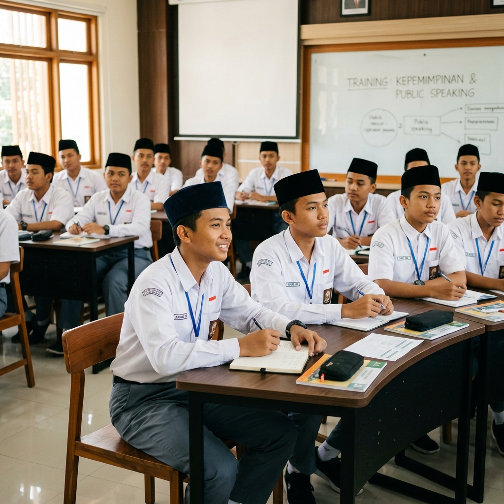
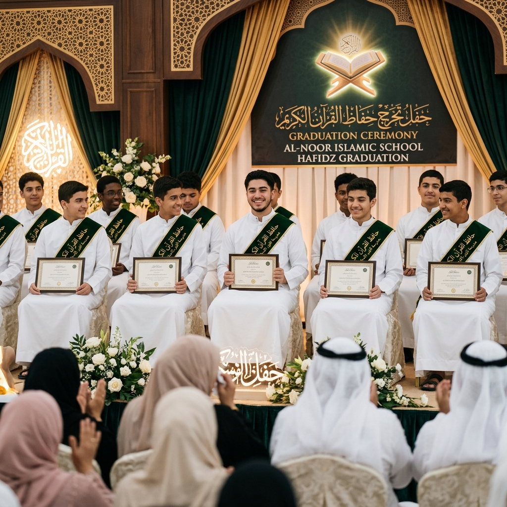

Berita Terkini

Peluncuran Program Leadership 2026
PPTQ AL WAHYU resmi meluncurkan program pembinaan kepemimpinan santri angkatan 2026 yang mencakup public speaking, organisasi, dan dakwah digital.
Baca Selengkapnya
Wisuda Santri Hafiz Al-Qur'an Batch 2024
Sebanyak 32 santri berhasil menyelesaikan hafalan 30 Juz dan diwisuda dalam sebuah acara yang penuh haru dan kebanggaan.
Baca Selengkapnya
Kerjasama dengan Universitas Islam Terkemuka
Penandatanganan MoU antara PPTQ AL WAHYU dan universitas Islam terkemuka untuk jalur penerimaan mahasiswa baru lulusan pesantren.
Baca Selengkapnya